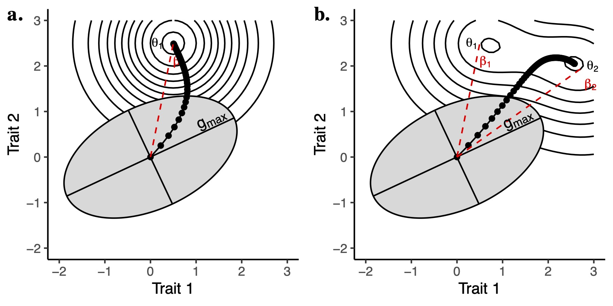

Animals construct their bodies through a set of developmental rules that determines and constrains the final morphology. At the EMORPH2 Lab (Evolutionary MORPHology and MORPHometrics), we study how these rules interact with selective pressures to produce phenotypes and how they diversify with time. We integrate information from anatomy, function, genetics and development to study large-scale patterns of diversification, particularly of mammals. We quantify the variation of complex morphometric systems, such as the skull, and model their evolution using statistical tools grounded in evolutionary theory.
The lab is also in charge of the Collection of Vertebrates (COV) at Oklahoma State University.